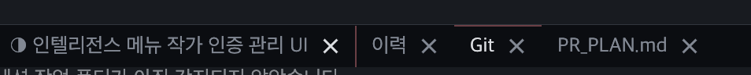

DEPPY SIJO · HTML 시안
탭바의 선택 상태와 구분선
선택 탭은 상단·우측 라인으로 강조합니다. 다른 탭도 같은 위치에 연한 라인을 두고, 탭 종류와 관계없이 하나의 규칙을 사용합니다.
클릭해서 선택 상태 비교
선택된 화면
Git
Design / 세션에 속한 Git 작업 화면
높이 27px · 라인 1px · 현재 2배 확대. 탭 선택·hover·닫기를 확인할 수 있습니다. 좁은 화면에서는 탭 줄을 가로로 이동하세요.
선택 위치별 실제 크기
모두 동일한 높이와 선 규칙공통 규칙
| 상태 | 상단·우측 라인 | 타이틀 |
|---|---|---|
| 선택 | 워크스페이스 색 · 100% | 밝은 기본 텍스트 |
| 비선택 | 같은 색 · 24% | 연한 텍스트 |
| 비선택 hover | 같은 색 · 36% | 선택 라인과 같은 색 |
| 선택 hover | 선택 상태 유지 · 100% | 선택 라인과 같은 색 |
좌측선·하단선은 그리지 않습니다. 각 탭이 자신의 우측 경계를 한 번만 그려 중복 강조를 없앱니다. 빈 영역에는 탭 라인을 연장하지 않습니다. 닫기 버튼에 마우스를 올려도 선택 라인은 바뀌지 않습니다.
높이 27px·선 두께 1px·상태별 농도는 공통 변수로 관리합니다. 긴 제목은 한 줄 말줄임 처리하며, 선택 여부나 hover로 탭 크기를 바꾸지 않습니다.
제공한 현재 화면 보기

현재 화면에서는 선택 상단선과 세션 경계선의 강조 기준이 달라 보입니다. 시안은 탭별 상태 하나로 두 선을 함께 결정합니다.
디자인 검토용 HTML입니다. 본문은 예시이며 실제 앱·세션과 연결하지 않습니다.